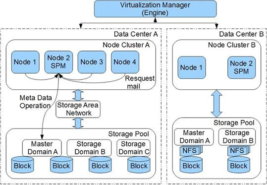
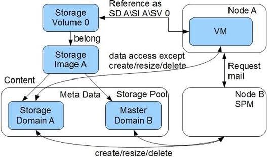
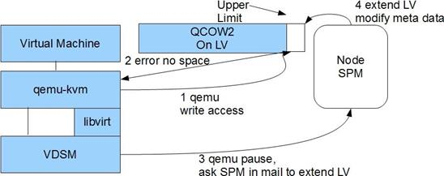

oVirt 的 Node/Engine 结构
oVirt 是一个基于 x86 架构上的 KVM 虚拟化技术的开源 IaaS 云服务解决方案。在架构设计上它使用了 Node/Engine 分离结构，以方便功能的划分与管理。

Engine 在整个系统中充当管理者的角色并对外提供管理服务，它挂载了自己的数据库记录整个系统中所有的虚拟机配置，各个节点的自身状态，系统的网络状态，存储器状态。管理的逻辑，状态及策略全部在 Engine 中设置与实现。Node 只负责功能上的实现，不进行任何状态的记录和任何策略的实现。Engine 与 Node 之间的关系十分像 Linux 中驱动程序与应用程序的功能分割关系：驱动仅仅负责功能的实现，如设备的读、写、开启与关闭，如何使用这些功能留给应用层。同样 Node 仅仅负责实现虚拟机器与设备的创建与修改，资源的共享与保护，如何使用这些功能交给 Engine 处理。Node 暴露两种基于网络的 API 与 Engine 交互，XMLRPC 与 REST。Engine 通过这些接口控制各个 Node 上功能的启动。当然用户也可以调用这些 API 进行第三方程序的开发。
oVirt 里的 Node 可以由一个普通的 Linux 上安装 VDSM(Virtual Desktop Server Manager) 构成，也可以由一个专为 oVirt 定制的 Linux 系统构成。在定制的情况下，Node 上的许多文件系统都是 ramdisk( 基于内存的 Linux 磁盘设备 )，系统重启后其中的内容消失，从而保证了 Node 的无状态性。Engine/Node 的设计不仅方便将来的开发，更简化了用户的安装使用，在定制的情况下 Node 可以快速大量部署。
VDSM 对存储器的管理
每一个 Node 上都会运行一个 VDSM，实现网络、存储器、虚拟机的创建与修改的功能。VDSM 的大部分代码用在了存储系统上，其功能包括数据的组织，集群下的数据共享与保护，故障恢复。通常情况下每一个物理机器当作一个 Node，运行一个 VDSM，Node 本身只携带少量存储器用以保存配置。一个集群中通常有一个 Engine 和数个 Node，这些 Node 通过网络连接到 SAN(Storage Area Network) 上，VDSM 把 Node 上运行的虚拟机存储数据保存在 SAN 上，Node 本身为无状态的节点，重新启动后状态消失，从而保证了系统整体的可用性，一般情况下不会因用户的操作而使 Node 失效。一旦问题发生，通常一次重启既可恢复工作状态。
共享存储可以是
NFS，SAN或者GlusterFS，实现云存储，Node上启动的虚拟机虚拟机通过存储在共享存储中实现在不同Node上切换，实现FailOver。
简单概括起来，VDSM 的功能主要有：负责 Node 的自动启动与注册；虚拟机的操作与生命周期管理；网络管理；存储管理；Host 与 VM(Virtual Machine) 状态监视与报告；提供对虚拟机的外部干涉功能；提供内存与存储的合并与超支功能 (Over Commitment)。
VDSM 基于以下原则设计存储系统：
- 高可用性：一群安装有
VDSM的Node在组建集群的时候，没有潜在的单点故障存在，任何一个Node崩溃不会影响整个集群的功能，它的角色会被其他Node取代。Engine不可用的情况下，Node将继续工作，用户对虚拟机的操作可以继续进行。 - 高伸缩性：添加
Node和SAN几乎不需要用户的设置，Node上的VDSM会自己注册自己。 - 集群安全性：一个
VDSM对正在操作的 virtual image 进行排它性保护。 - 备份与恢复：virtual image 之间有相互关连的特性记录可进行一系列引用 / 备份操作。
- 性能优化：利用多线程与多进程减少操作堵塞状况。
Storage Domain（以下简程 SD) 是 VDSM 中的最基本存储实体，所有的 virtual image 和 virtual image 对应的元数据都会保存在其中。和 VDSM 中的 Storage Image 概念不同，这里的 virtual image 表示的是虚拟机程序用到的虚拟磁盘数据，特指虚拟机程序最终能够操作的文件或设备文件对象。元数据是描述 virtual image 相关数据大小、状态、锁等内容的一组数据集合。SD 包括两种类型：File Domain 和 Block Domain。
File Domain 使用文件系统存储数据并同步操作，主要针对 NFS(Network File System) 和 LOCALFS(Local File System) 文件系统。在文件系统的帮助下，File Domain 拥有良好的 virtual image 操作能力，每一个虚拟机的存储数据（称为 Volume）和对应的元数据都以文件的方式保存。每一个 Domain 实际对应于 Host 文件系统上的一个目录，针对 NFS 文件系统 VDSM 还有额外的逻辑来处理相关意外与错误情况。
Block Domain 直接操作原始的块数据，使用 Linux 的 LVM(Logical Volume Manager) 功能来组织数据，主要针对 iSCSI(Internet Small Computer System Interface)，FCoE(Fibre Channel over Ethernet ) 等块设备。由于目标设备上通常没有一个文件系统来保证访问的安全性，VDSM 使用了邮箱机制来保证任意时刻，只有一个 Node 可以修改 Block 上的内容，而其他 Node 则通过 Socket 邮箱发送自己的修改请求。因此它的操作请求速度和监视功能都会比 File Domain 弱一些。通常设备将使用 Linux 的 device mapper 机制进行一次映射，每一个 Domain 实际上是一个 Linux 中的 Volume Group，元数据保存在其中的一个 Logic Volume 及其 tag 上，虚拟机的 Volume 保存在另一个 Logic Volume 中。
Storage Pool( 以下简称 SP) 是一组 SD 的组合，目标是管理跨越 SD 之间的操作，也就是说 SD 之间互相的引用、备份、恢复，合并一般发生在一个 SP 之中。在数据中心里，一个 SP 抽象了一组 SD 的集合供外界的 Node 访问或者 Engine 管理，并且一个 SP 中的所有 SD 必须是同一类型，如 NFS 或者 iSCSI。
为了保证 SP 中的数据安全，一组 SP 中需要选择一个 SD 作为 Master Domain。这个 Domain 的不同之处在于它会保存 SP 中所有的元数据，保存一些异步请求或者任务的数据，保存所在 SP 的集群存储用到的锁。
为了简化管理，oVirt 中抽象出了 Data Center 概念，一个 Data Center 将拥有一组 Node Cluster 用来运行虚拟机，一个 Storage Pool 用来保存虚拟磁盘数据。Node Cluster 是一组专门用来运行虚拟机的 Node 的集合，运行在其中的虚拟机可以动态迁移到 Node Cluster 中的另外一个 Node 上。一个 Data Center 是一个完成 oVirt 所有功能的实体，在这个 Data Center 中用户可以创建虚拟机、备份虚拟机、配置虚拟机的 Storage Domain，动态迁移虚拟机。Node/Engine 有一些算法在开启的时候可以自动平衡 Data Center 中的 Node 的负载。概括起来一个 Data Center 是一个管理 Node Cluster 与 Storage Pool 的集合。
由于 Data Center 中所有的 Node 都拥有对 Data Center 中的 Storage Pool 的访问权限，因此 VDSM 实现了一个称为 SPM(Storage Pool Manager) 的功能角色。在一个 Data Center 中，所有的 Node 启动后会自动选举出一个 Node 充当 SPM 的角色，被选举者将运行 VDSM 上的 SPM 逻辑，负责完成以下功能：创建 / 删除 / 缩放所在 Data Center 中的 Image，快照，模板。这些操作的共同点是会影响 Storage Pool 中的元数据，如 SAN 上松散块设备的分配。为了保证元数据不被多个 Node 同时修改，SPM 拥有对 Storage Pool 中元数据的排它性操作权限，SPM 使用集中式邮箱接受其他 Node 的相关请求，其他 Node 只能通过给 SPM 发送操作请求的方式修改元数据，最终的操作都由 SPM 线性完成，从而避免了存储器操作竞态的出现。为了兼顾效率，不修改元数据的普通操作，如数据读写，Node 可以不同过 SPM，自己直接访问 Storage Pool 完成。由于 SPM 是由一个普通 Node 选举出来的，因此当它因为外部原因失效后，系统将会选举出另外的 Node 充当 SPM，从而保证系统能继续运行。

前面所说的抽象概念主要是给 VDSM 自己组织管理数据用的，而 Storage Image 和 Storage Volume 则是 VDSM 抽象出来以方便给虚拟机使用的概念。Storage Image 和前文所描述的 virtual image 不同，virtual image 是虚拟机程序看到的虚拟磁盘，一个 Storage Image 中往往包含很多 Storage Volume，每一个 Storage Volume 都可以作为一个 virtual image 传递给虚拟机作为虚拟磁盘使用。同一个 Storage Image 中的多个 Storage Volume 往往存在相互备份，相互引用等关系。当几个 Storage Volume 之间是引用的关系时，这几个 Storage Volume 集合成为一个 virtual image 传递给虚拟机，在虚拟机看来它操作的就是一个虚拟磁盘只不过数据分布在一系列的 Storage Volume 上（这时把最外层的 Storage Volume 作为参数传递给虚拟机启动程序 )。Storage Image 用来管理这样一组含有内在联系的 Storage Volume。在 Storage Domain 和 Storage Pool 建好后，VDSM 便可以通过 SPM 在指定的 Storage Domain 里创建 Storage Image 与 Storage Volume。创建虚拟机的时候需要 Storage Volume 做为参数。

Storage Over Commitment 是一个允许管理者分配比实际存储空间大的虚拟存储器给用户使用的技术。一个虚拟机所占用的实际存储空间可以比它所定义的存储空间小的多，只有当其中的存储数据真正增长时，其实际存储空间才会动态增长。如管理员定义 VM1 拥有 12G 的 Image，但系统启动后这个 Image 实际只占用了 10M 的存储空间。当用户在虚拟机安装软件后，Image 实际占用的空间才会增长。这种技术允许虚拟机不需要考虑实际机器的物理存储能力，做到存储器的共享与使用效率最大化。
Qemu 的几种存储格式都能提供这种动态伸缩能力，如 QCOW2 格式。VDSM 使用了 Qemu 的存储缩放功能，当使用的 Storage Domain 为 Logic Volume 时间，VDSM 将会监视 Qemu 所标记的写入上限位置。当发现越界时，VDSM 将会请求 SPM 扩展 Logic Volume 大小，从而完成空间的动态增长。

参考
- oVirt 中的存储管理 - 本文摘自此文档及一些相关资料汇总